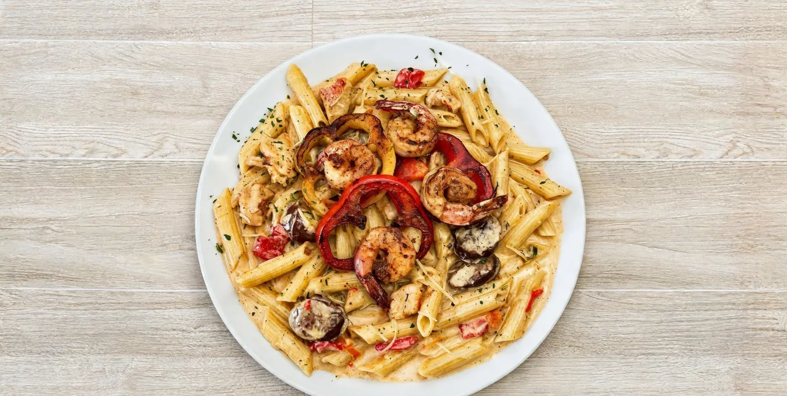

Our Cajun pasta, in Creole cream sauce
Mardi Gras Pasta is creamy Cajun pasta with your choice of chicken, shrimp, or both. It is built on our house Creole cream sauce, the same sauce we sell on the side as Pasta Cream Sauce.
Priced at $16. Prices match our DoorDash menu and may change; final pricing and fees show at checkout.
Serving Southwest Houston
We make Mardi Gras Pasta at 10600 Fondren Road and send it out by drive-thru, pickup or delivery through DoorDash. We are open Monday through Saturday, 6:30am to 6:30pm. Looking for Cajun pasta near Fondren Road? This is the plate to start with. Feeding a crowd? Ask about catering.
Enjoyed it? Leave us a Google review.
You might also like
- Crawfish Fettuccine — the same cream sauce, built around crawfish
- Shrimp & Grits — Creole cream sauce over creamy grits
- Catfish Bienville — blackened catfish under crab and shrimp Bienville sauce